Research Assistant · Tilman J. Fertitta Family College of Medicine
Preparing quantitative datasets and supporting reliability, dimensionality, and preliminary psychometric analyses for medical respite care and medical student experience measures.
I'm a doctoral student in Measurement, Quantitative Methods & Learning Sciences at the University of Houston. With a background in computer science and machine learning, I bring computational and psychometric methods to questions of student motivation, engagement, and digital health.

I combine applied measurement, health research, and teaching. My recent work includes pilot-measure validation, psychometric evaluation, and research on digital health engagement.
Preparing quantitative datasets and supporting reliability, dimensionality, and preliminary psychometric analyses for medical respite care and medical student experience measures.
Supporting Child and Adolescent Health and Health Aspects of Human Sexuality, with assessment, student feedback, and Canvas course administration.
Evaluated coursework and group projects, offered individualized feedback, and supported instruction in health behavior theory and intervention design.
Directing data collection and analysis for health intervention programs, mentoring interns, and contributing statistical analysis to manuscripts under an NSF AISL grant.
Graduate Assistant, UH Bauer College of Business & Fertitta College of Medicine (2025); Instructional Assistant and Teaching Assistant, University of Houston (2024); Research Assistant, College of Education (2023–2024); Data Scientist, United We Care, India (2021–2023).
Recent peer-reviewed work spanning medical education, adolescent health, health information hygiene, and AI-enabled healthcare.
Grit in undergraduate medical education: A scoping review. Medical Science Educator. DOI ↗
Associations among anxiety, sleep quality, and binge eating in Hispanic and African American/Black early adolescents. Children, 13(6), 761. DOI ↗
Preventing health information disorders in college students. Journal of American College Health. DOI ↗
Applications of AI-based conversational agents in healthcare: A systematic umbrella review. International Journal of Medical Informatics. DOI ↗
Visual voices: Youth perspectives on neighborhood and school health. Children, 12(9), 1165. DOI ↗
Projects unite educational psychology, public health, and computational methods—with a consistent focus on translating evidence into useful decisions.
Reliability testing, dimensionality assessment, pilot-measure validation, SEM, multilevel modeling, serial mediation, and BCa bootstrapping.
HINTS 7 studies of online health information seeking, wearables, eHealth engagement, psychological distress, and digital health equity.
IRB-approved and conference research on grit, self-efficacy, academic belonging, growth mindset, and science engagement.
Classification, NLP, sentiment analysis, OCR, time-series forecasting, and interpretable analytics using Python and R.
Scholarships, fellowships, and competitive funding supporting my doctoral training, research, and scholarly dissemination at the University of Houston.
Competitive scholarship supporting continued doctoral study and research.
University of Houston endowed scholarship recognizing academic achievement.
University of Houston fellowship supporting conference travel and research dissemination.
APA Division 15, American Psychological Association Annual Convention.
University of Houston awards: $8,162 for 2024–2025 and $9,929 for 2023–2024.
University of Houston tuition support: $9,180 in 2025–2026, $9,180 in 2024–2025, and $4,680 in 2023–2024.
Competitive University of Houston funding award (54.213PH).
A hybrid toolkit for rigorous quantitative research—from study design and statistical modeling to reproducible analysis and communication.
Research posters presented at the 2025 American Psychological Association Annual Convention. Open each poster to view the complete, high-resolution PDF.
Examines gender-specific relationships among anxiety, sleep quality, and emotional eating in Hispanic adolescents.
Explores how self-efficacy and difficulties regulating motivation and learning activities relate to academic procrastination.
Investigates gender-specific associations of body size discrepancy, sleep quality, and social anxiety with BMI.
Highlights from conferences, presentations, and the scholarly community. New occasions will be added as separate collections.
American Psychological Association Annual Convention · Denver, Colorado · August 2025
Scuba diving, camping, natural springs, and time with friends across Florida.
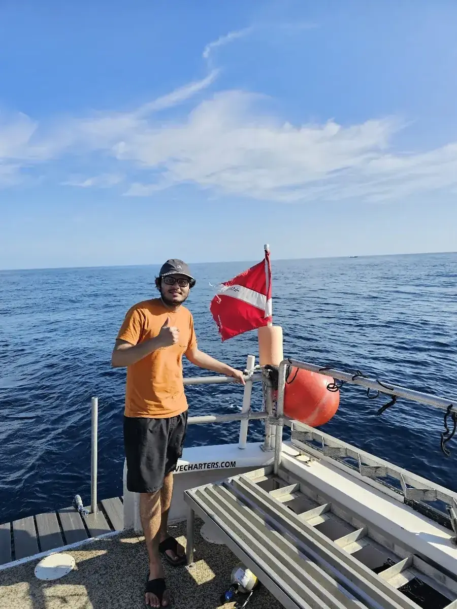
Out on the water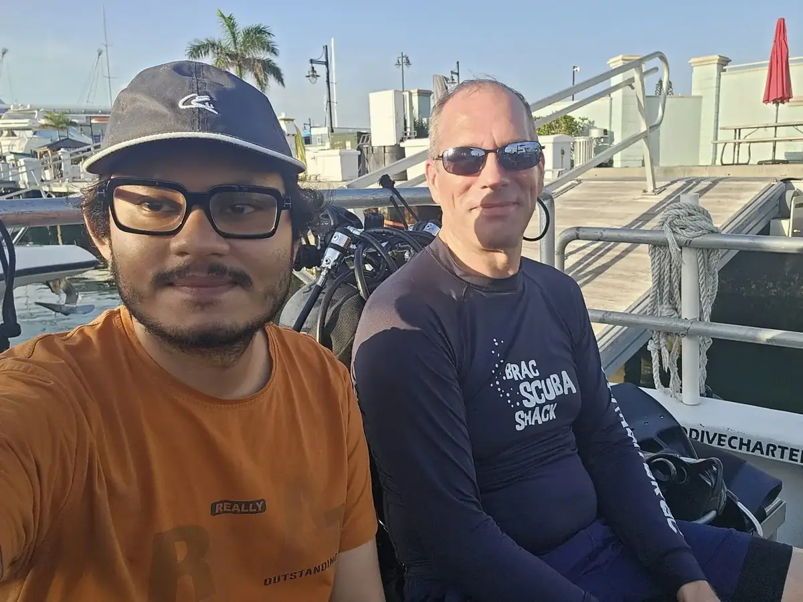
Ready for a dive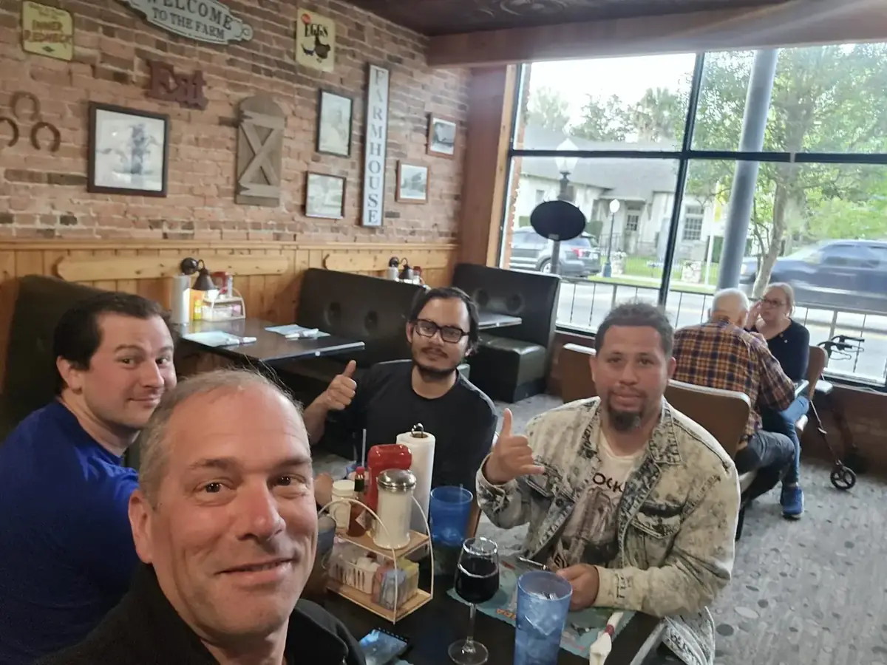
Breakfast with friends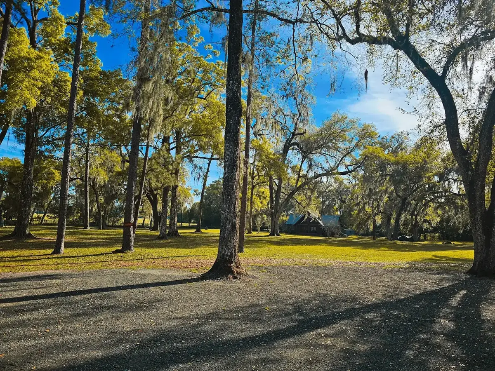
Florida countryside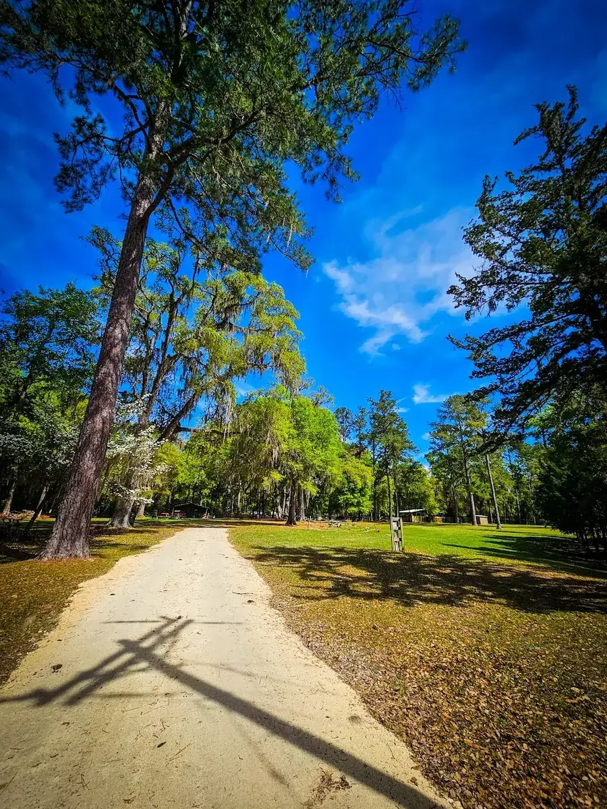
Exploring the trails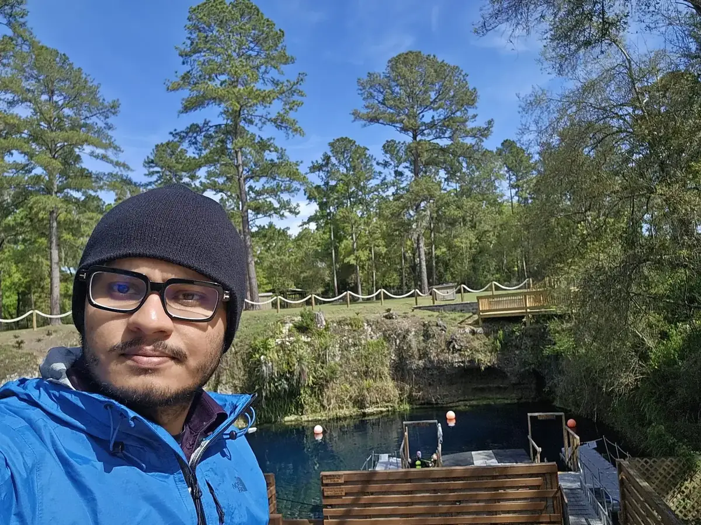
At the natural spring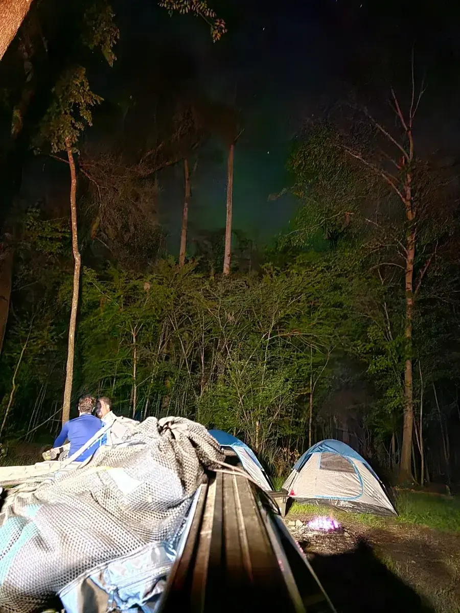
Camping under the trees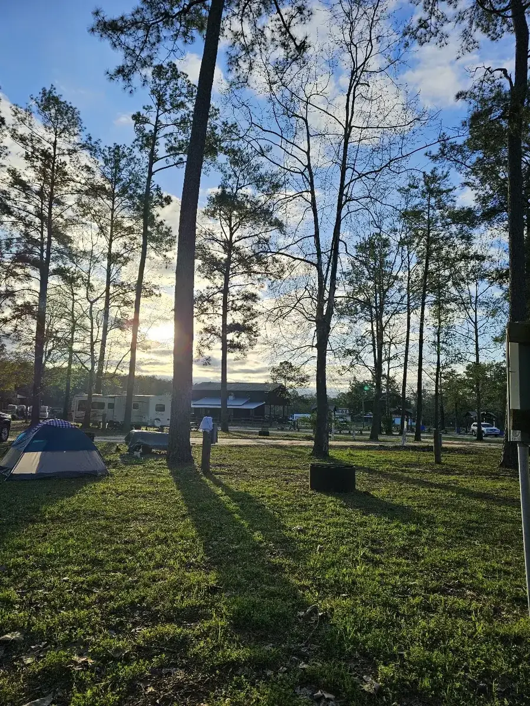
Campground sunset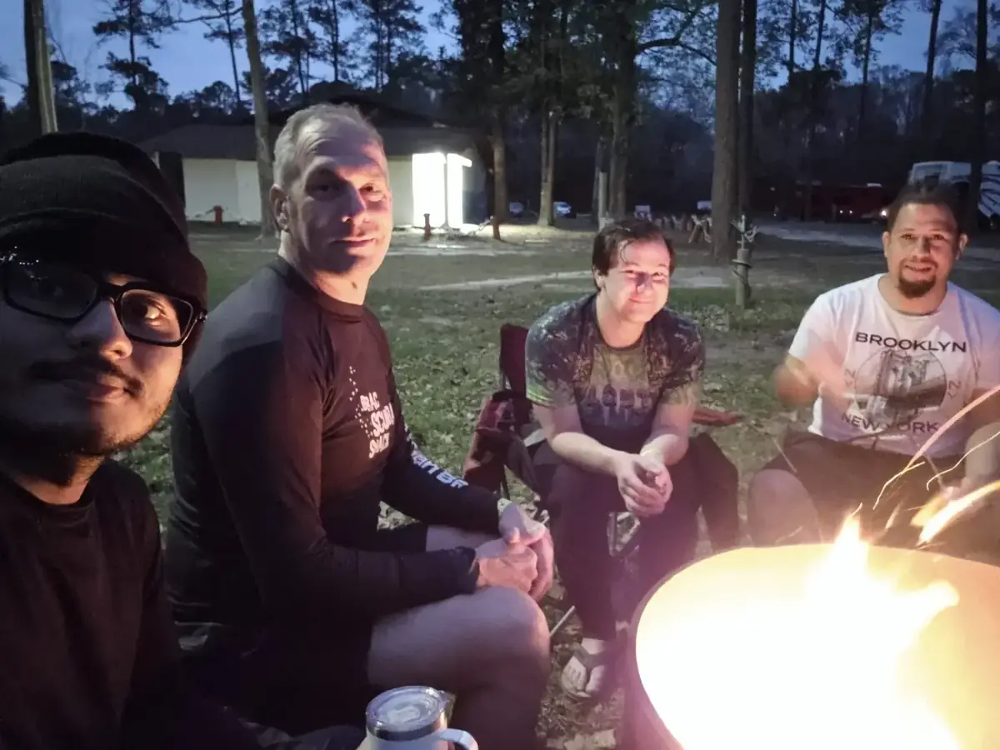
Around the campfire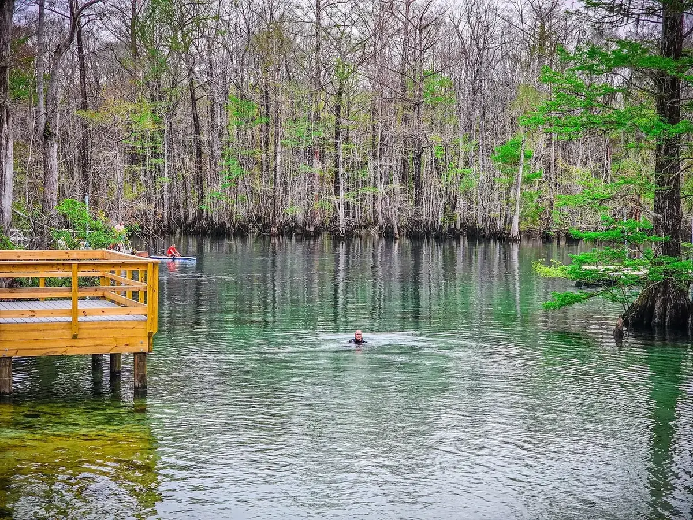
Florida's clear springs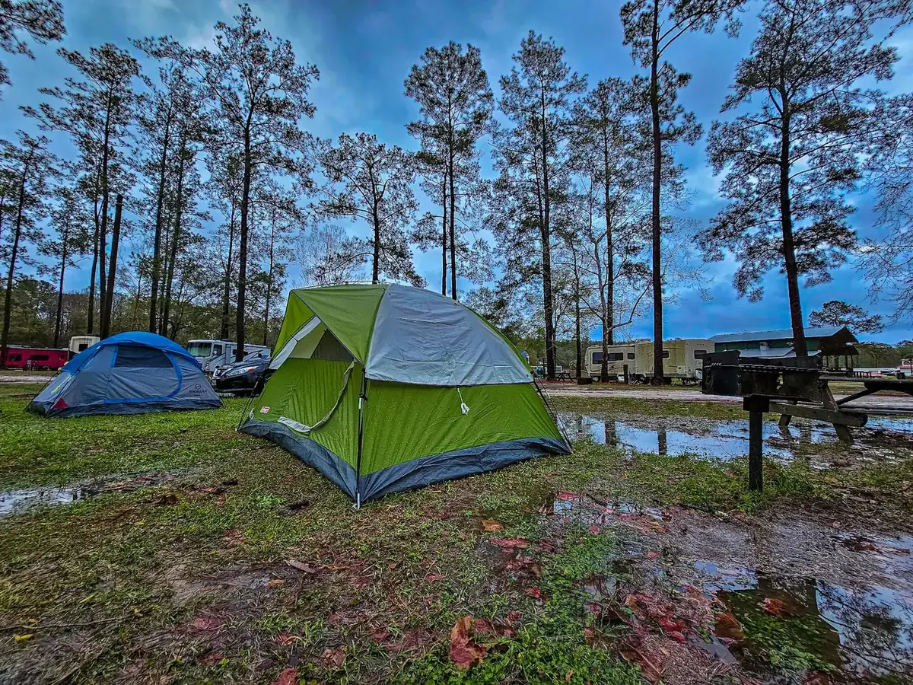
Camping in FloridaA sunny visit to Galveston Beach and the historic Bishop's Palace.
Citation metrics from my Google Scholar profile, with direct access to the complete publication record.
Publication reach and citation activity over time.
Academic preparation spanning computer science, engineering, quantitative methods, and the learning sciences.
Bachelor of Science in Engineering in Computer Science and Engineering
Undergraduate focus in computer science, engineering, and data mining.